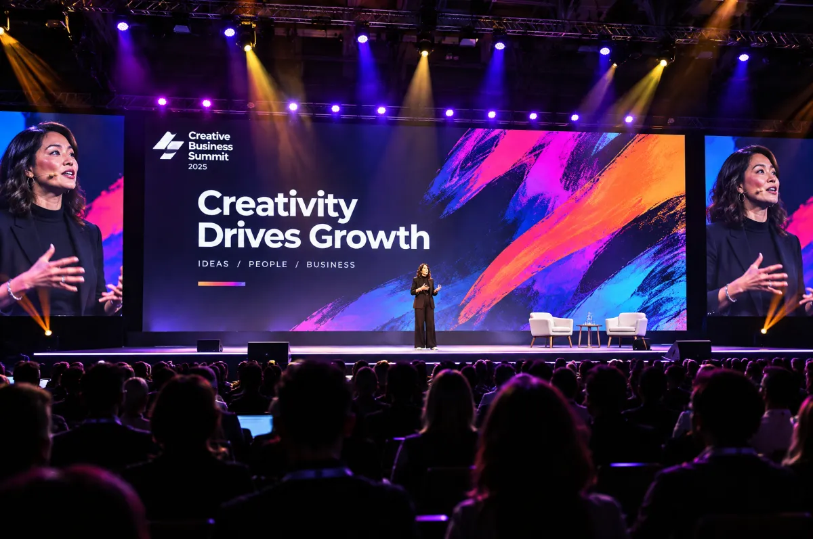
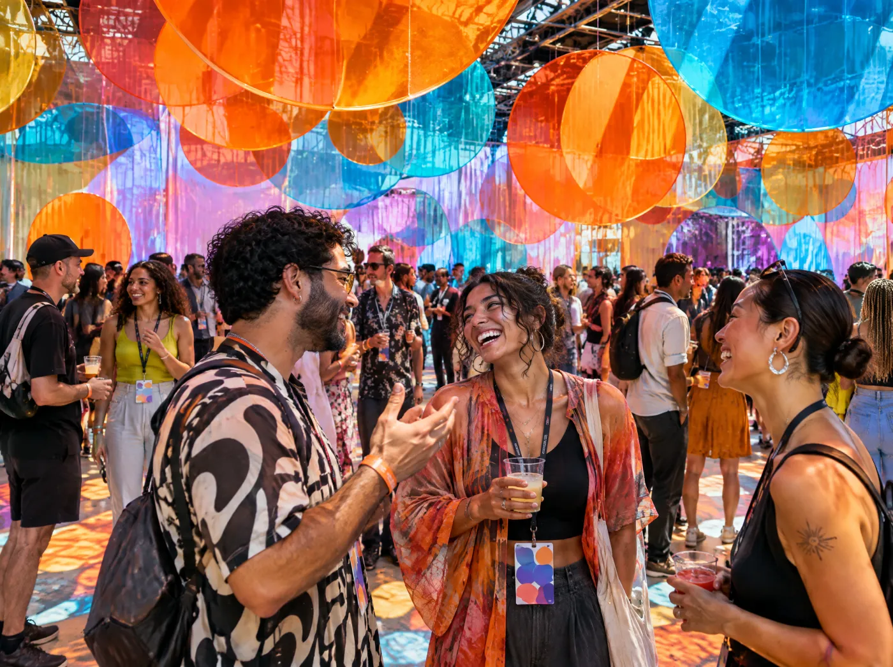

Stock Motion brings people and ideas from different fields together to see the same problem through many lenses. Business is about people, so their stories sit at the centre of the conversation.


Talks open the door to deeper exploration of topics and themes, and are an invitation to find inspiration.